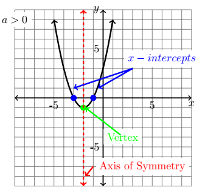
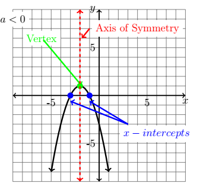
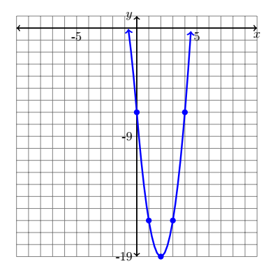
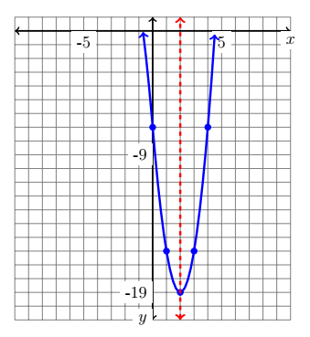

CH 2.1 – Quadratic Functions
In the first section we already discussed and re-introduced the quadratic function. In this section we are going to dive a bit deeper and discuss graphs of quadratic functions, and how we solve them. These are rather common functions in mathematics and should be nothing new to you.
Quadratic Function
Allow \(a\), \(b\), and \(c\) to be any real number where \(a \neq 0\). Then the general form of a quadratic is:
Recall that the shape of a quadratic function is "u" or "n" shaped depending on the transformation the parent function underwent. We also tend to call quadratics parabolas. The shape of the parabola has many characteristics that make it easier to graph than other polynomial functions. A few of those characteristics are the:
- Vertex — the turning point of the graph, or where it changes from decreasing to increasing or from increasing to decreasing.
- Axis of Symmetry — an imaginary line that runs vertically through the vertex, that essentially cuts the parabola in half creating two identical copies on both sides.
- x-intercepts — the place where the graph crosses the \(x\)-axis. One issue that can arise with the \(x\)-intercepts is that the graph of a quadratic can have from zero to two intercepts. When there is no \(x\)-intercept, that means the graph doesn't cross the \(x\)-axis.
- Leading Coefficient \(a\) — the leading coefficient \(a\) tells us if our quadratic opens upward like a "u" or downward like an "n". If \(a < 0\) then, recalling our transformations, we have a reflection over the \(x\)-axis, meaning the graph opens downward like an "n". On the other hand if \(a > 0\) the graph opens upward like a "u".
The two graphs below outline the four characteristics that we just covered.


Using the Standard Form to Graph Quadratic Functions
The standard form of a quadratic function is \(f(x) = a(x-h)^2 + k\). This form we have already visited in the first section when we did transformations. It is helpful because it gives you all the information you need in one spot to graph a quadratic. However, quadratics are not always written in this form. Typically most quadratic functions are written in their general form. But, with a few steps using a method called completing the square, we can convert our general form into our standard form.
Before we get into completing the square, it may be important to refresh your mind on what a perfect square trinomial is. A perfect square trinomial is when you multiply two exact binomials together. For example, if you took \((x-2)(x-2) = (x-2)^2\) then when you multiply that out you end up with \(x^2 - 4x + 4\), which is a perfect square trinomial. Notice how the first and last terms are perfect squares. We use this idea in completing the square. This is a method that will come in extremely helpful later on when you get to the section on conics, as well as in this section for solving and graphing quadratic functions.
Completing the Square
- Step 1: Move the constant to the right-hand side of the equation.
- Step 2: If \(|a| > 1\), factor \(a\) out from the squared term and the \(x\) term.
- Step 3: Take half of the number in front of the \(x\) term, square it, and add it to both sides of the equation.
- Step 4: The left-hand side of the equation should be a perfect square trinomial — factor it.
- Step 5: Lastly, bring the constant back over to the left side of the equation.
Example
Write the quadratic function \(f(x) = 3x^2 + 12x + 5\) in standard form.
Solution
Step 1: Move the constant to the right side.
\[ f(x) = 3x^2 + 12x + 5 \] \[ 3x^2 + 12x + 5 = 0 \] \[ 3x^2 + 12x = \textcolor{red}{-5} \]Step 2: Factor \(a\) out from the left-hand side.
\[ 3x^2 + 12x = -5 \] \[ \textcolor{red}{3}(x^2 + 4x) = -5 \]Step 3: Take half of 4 and square it: \(\left(\dfrac{4}{2}\right)^2 = (2)^2 = 4\), and add it to both sides.
\[ 3(x^2 + 4x) = -5 \] \[ 3(x^2 + 4x + \textcolor{red}{4}) = -5 + \textcolor{red}{3(4)} \]Step 4: Factor and simplify.
\[ 3(x^2 + 4x + 4) = -5 + 12 \] \[ 3(x + 2)^2 = 7 \]Step 5: Bring the constant back over to the left side.
\[ 3(x + 2)^2 = 7 \] \[ 3(x + 2)^2 - 7 = 0 \] \[ f(x) = 3(x+2)^2 - 7 \]Now why is it important to get it in this form? Well this form can tell us about three of those four characteristics that we discussed earlier, as well as a new one. It tells us about:
- Vertex: It is the point \((h, k)\).
- Axis of Symmetry: It is the equation \(x = h\).
- Concavity: This is another word for whether it opens upward or downward — all determined by the \(a\) value.
- Maximum/Minimum: A quadratic function doesn't have both; it has one or the other, which is determined by the \(a\) value. If \(a > 0\) then the graph has a minimum at \(k\). If \(a < 0\) the graph has a maximum at \(k\). It is important to note that it isn't based off of the \(k\) value alone — this is a common misconception. A maximum value can be negative and a minimum value can be positive.
Example
Identify the vertex, axis of symmetry, and the maximum/minimum of \(f(x) = -2x^2 + 12x + 7\). Also determine if it is a maximum or minimum.
Solution
First we will need to complete the square to put this into standard form.
\[ f(x) = -2x^2 + 12x + 7 \] \[ -2x^2 + 12x = -7 \] \[ -2(x^2 - 6x) = -7 \] \[ -2(x^2 - 6x + 9) = -7 + (-2)(9) \] \[ -2(x - 3)^2 = -25 \] \[ -2(x - 3)^2 + 25 = 0 \] \[ f(x) = -2(x-3)^2 + 25 \]From the standard form of the equation we can identify:
Vertex: \((h,k) = (3, 25)\). The \(h\) is always opposite of what is inside the function.
Axis of Symmetry: \(x = h \Rightarrow x = 3\)
Maximum/Minimum: Since \(a = -2\), the graph opens downward, meaning we have a maximum. The maximum value is \(\{25\}\) — it is a value, not an equation, so we do not write \(y = 25\), which would represent a horizontal line.
Using the General Form of Quadratic Functions
All of this information can also be found using the general form of a quadratic function. Both forms will provide you with enough information to graph a quadratic function. The method that you choose is always up to you.
General Form — Characteristics
Allow \(f\) to be a quadratic function in the general form of \(f(x) = ax^2 + bx + c\), then:
- Vertex: \(\left(\dfrac{-b}{2a},\; f\!\left(\dfrac{-b}{2a}\right)\right)\)
- Axis of Symmetry: \(x = \dfrac{-b}{2a}\)
- Maximum/Minimum: \(f\!\left(\dfrac{-b}{2a}\right)\). It is a maximum when \(a < 0\) and a minimum when \(a > 0\).
Example
Identify the vertex, axis of symmetry, and maximum/minimum of \(f(x) = 2x^2 + 10x - 5\), using the general form.
Solution
To start, identify \(a\) and \(b\) of the function. For this function \(a = 2\) and \(b = 10\). Next, substitute them into the formula:
\[ \frac{-b}{2a} = \frac{-10}{2(2)} = \frac{-10}{4} = \frac{-5}{2} \]Next, substitute that value back into \(f(x)\) to find the \(y\)-value.
\[ f\!\left(\frac{-5}{2}\right) = 2\left(\frac{-5}{2}\right)^2 + 10\left(\frac{-5}{2}\right) - 5 \] \[ = 2\left(\frac{25}{4}\right) - 25 - 5 \] \[ = \frac{25}{2} - 30 = \frac{-35}{2} \]Thus we end up with a vertex of \(\left(\dfrac{-5}{2},\, \dfrac{-35}{2}\right)\), which gives us an axis of symmetry of \(x = \dfrac{-5}{2}\). Lastly, since \(a = 2\) and that is greater than zero, we have a minimum at \(\left\{\dfrac{-35}{2}\right\}\).
Graphing Quadratic Functions
The point in finding the vertex, axis of symmetry, and maximum/minimum is because they are all very useful pieces when it comes to graphing quadratic functions.
How to Graph Quadratic Functions
- Step 1: Identify the vertex of the parabola.
- Step 2: Create a table, finding two points below your vertex and two points above the vertex.
- Step 3: Plot the points on the coordinate axis.
- Step 4: Plot the axis of symmetry using a dotted line. Be sure to check that it "cuts" the parabola in half.
Example
Graph the function \(f(x) = 3x^2 - 12x - 7\), being sure to include the axis of symmetry.
Solution
Step 1: Identify the vertex.
\[ x = \frac{-b}{2a} = \frac{12}{3(2)} = \frac{12}{6} = 2 \] \[ f(2) = 3(2)^2 - 12(2) - 7 = 12 - 24 - 7 = -19 \]The vertex is \((2, -19)\).
Step 2: Create a values table using two values to the right of the vertex and two values to the left.
| \(x\) | \(f(x)\) | \((x, y)\) |
|---|---|---|
| \(0\) | \(f(0) = 3(0)^2 - 12(0) - 7 = -7\) | \((0, -7)\) |
| \(1\) | \(f(1) = 3(1)^2 - 12(1) - 7 = -16\) | \((1, -16)\) |
| \(2\) | \(f(2) = 3(2)^2 - 12(2) - 7 = -19\) | \((2, -19)\) |
| \(3\) | \(f(3) = 3(3)^2 - 12(3) - 7 = -16\) | \((3, -16)\) |
| \(4\) | \(f(4) = 3(4)^2 - 12(4) - 7 = -7\) | \((4, -7)\) |
Step 3: Plot the points on the graph.

Step 4: Graph the axis of symmetry using a dashed line.

Applications of Maximum & Minimum
As with anything in mathematics, we learn all of these methods so that later we can apply them to something real-world. A number of situations can be modeled using quadratic functions. In calculus you'll learn about optimization, which is essentially the ability to find the largest (or smallest) possible value of something given specific information.
Example
A small company that produces eyeglass frames hired a financial analyst to help them determine how much profit (\(P\) in hundreds of dollars) they can make from selling \(x\) (in hundreds) eyeglass frames. The analyst found that \(P(x) = 115 + 10x - 0.25x^2\). How many frames must the company sell to maximize their profits? What is their maximum profit?
Solution
This question asks us to locate the vertex of the quadratic \(P(x) = 115 + 10x - 0.25x^2\).
Vertex: \[ \left(\frac{-b}{2a},\; f\!\left(\frac{-b}{2a}\right)\right) = \left(\frac{-10}{2(-0.25)},\; f\!\left(\frac{-10}{2(-0.25)}\right)\right) = \bigl(20,\; f(20)\bigr) \]
\[ f(20) = 115 + 10(20) - 0.25(20)^2 = 115 + 200 - 100 = 215 \]What this tells us is that the company would need to sell \(20 \times 100 = 2{,}000\) eyeglass frames (remember \(x\) was in hundreds) in order to achieve their maximum profit of \(215 \times 100 = \$21{,}500\) (remember \(P\) was also in hundreds).
Example
Farmer Frank is looking to enclose two adjacent fields using 300 feet of fence. What dimensions of pasture(s) will yield the largest area? Use the diagram below to assist you with the problem.

Solution
There are two things that need to be considered in this problem: first, the perimeter of the fencing. We were told that we have 300 ft of fence to enclose these pastures. Looking at the diagram:
Length \(= x + x = 2x\)
Width \(= y\)
We have three widths that are the same and two lengths that are the same, which gives us a perimeter of:
\[ \text{Perimeter} = 3(y) + 2(2x) = 3y + 4x \]Since this is a rectangle, the area of the figure is \(2x(y)\). But we can't maximize that area directly because it isn't a single-variable quadratic. We need to take the perimeter equation, solve it for \(y\), and substitute it into our area equation to create a quadratic:
\[ P = 3y + 4x \] \[ 300 = 3y + 4x \] \[ 300 - 4x = 3y \] \[ \frac{300}{3} - \frac{4x}{3} = y \] \[ 100 - \frac{4x}{3} = y \]Now substitute that into the area equation:
\[ A = 2x\left(100 - \frac{4x}{3}\right) \] \[ A = 200x - \frac{8}{3}x^2 \]Next, find the vertex of the quadratic equation — that is where the maximum area is located.
This tells us that \(x = 37.5\), meaning the length of one pasture is \(37.5\) ft. The width of the pasture is:
\[ y = 100 - \frac{4}{3}x = 100 - \frac{4}{3}(37.5) = 100 - 50 = 50 \]Thus the width of one pasture is \(50\) feet. Putting all the pieces together, each pen measures \(37.5\) ft by \(50\) ft, with a maximum area of \(3{,}750 \text{ ft}^2\).
Exercises
Exercises to be added at a later date.